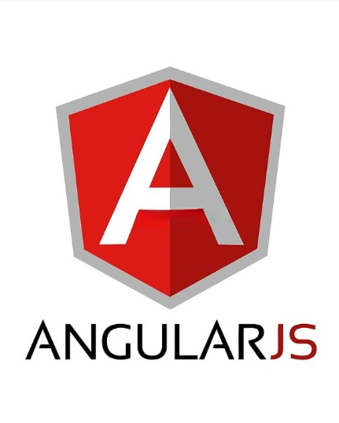
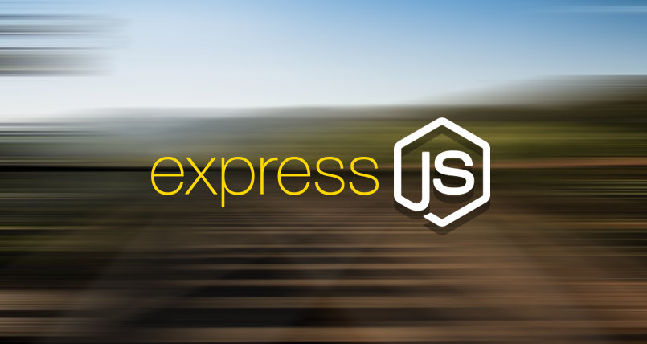
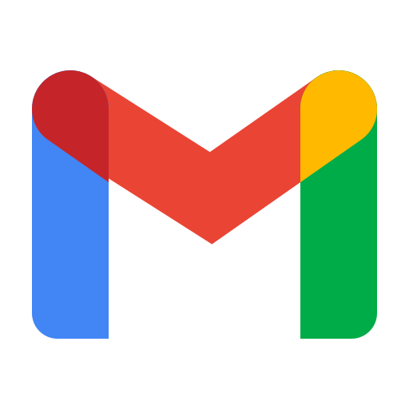
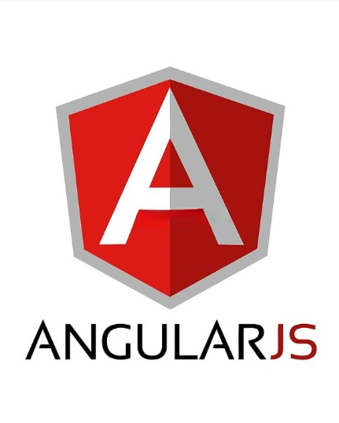
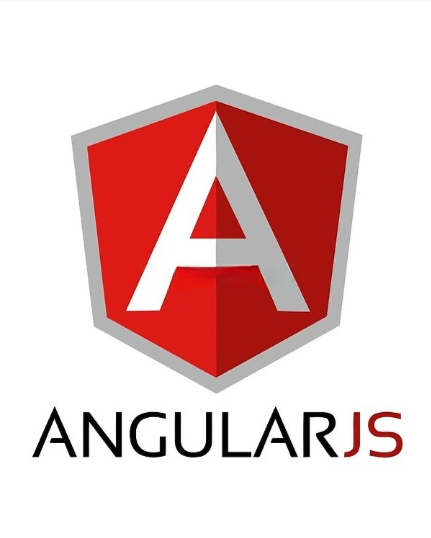
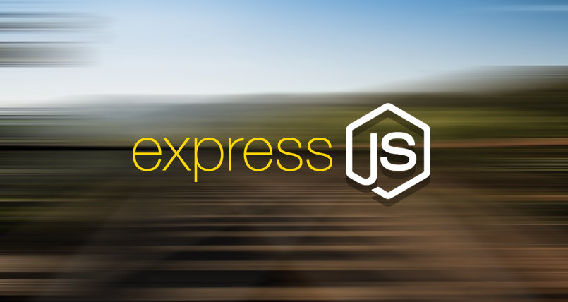
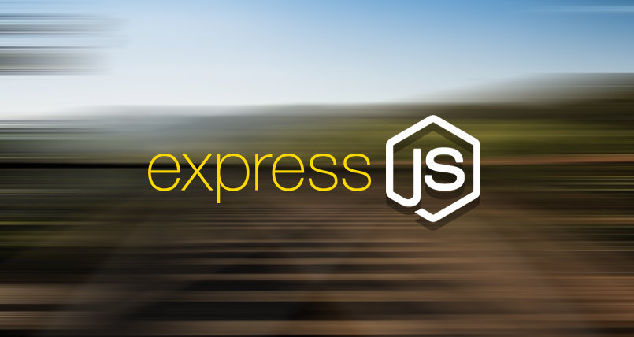

FRONTEND TECHNOLOGIES

BACKEND TECHNOLOGIES
MERN STACK
MEAN STACK

Adding whatsapp and sending message automatically by clicking
Adding phone icon and opening dialer by just clicking the icon
Adding gmail icon and opening mail by just clicking


 



 
